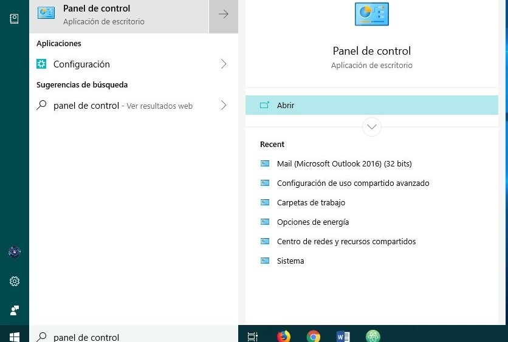
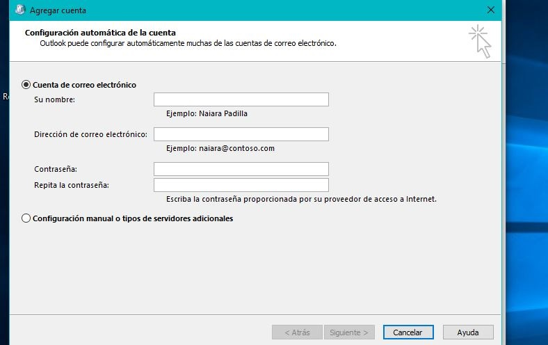
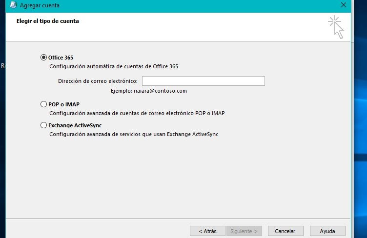
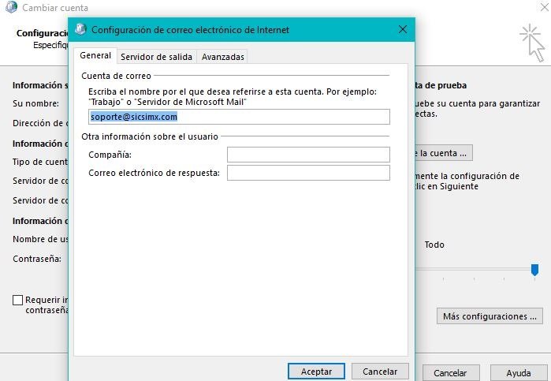
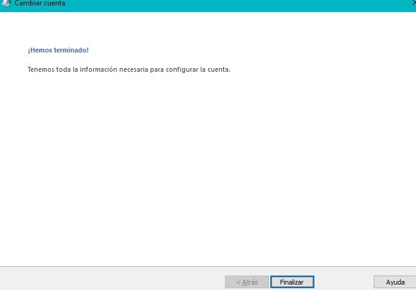

Hola, tal vez hayas llegado hasta aquí porque estas buscando la forma correcta de registrar tu correo en el servidor de correo Outlook y se te ha complicado por la configuración que este pide para poder gestionar tu correo desde el. Bueno has llegado al lugar correcto ya que nosotros te vamos a mostrar la forma más común y rápida de configurar este servidor.
Bien una vez tenemos claro que es lo que te vamos a mostrar en este post,
procederemos a definir sobre los 2 posibles métodos para acceder a tu correo
electrónico y estos son:
IMAP: Es el método recomendado cuando trabajas en varios
dispositivos (PC, móvil) con la misma cuenta y no es necesario mantener tus
mensajes sin conexión en una copia en tu equipo.
Te permite leer un mensaje de correo electrónico sin la necesidad de almacenar
o descargarlo en tu equipo ya que lo hace a través del servicio de correo
electrónico. Este método solo descarga el mensaje que leas, así como los archivos
adjuntos que contenga, por lo que es más rápido que al hacerlo con POP
POP: A diferencia de IMAP este descarga todos los mensajes nuevos
del servicio de correo electrónico y una vez hecho esto se eliminan del servicio
de correo, quedando únicamente en el equipo en el cual se hizo la descarga y
si se accede desde otro equipo no encontrara los mensajes que ya fueron alojados
en el otro dispositivo.
Esta copia de los mensajes descargados se aloja localmente en el equipo que realice
la petición.
Este método es más común en oficinas donde es necesario preservar la información
localmente dentro de la empresa y de esta manera evitar perdidas por parte
de los usuarios.
Ahora bien, lo siguiente que tenemos que saber es la configuración de los servidores
dependiendo de nuestro proveedor, estos varían dependiendo de las cuentas que se usen,
que por lo regular es fácil encontrar aquellos servidores de los correos como
Gmail o
Hotmail.
Pero existen otros casos en los que el dominio va personalizado como por ejemplo
nuestro correo que es soporte@sicsimx.com este
tiene su propio servidor al cual se conecta para poder realizar la extracción
de datos del correo.
Empecemos con la demostración de ingreso de una cuenta de correo a Outlook:
1.- Para esto nos dirigiremos nuestro panel de control, escribiendo en la barra de búsqueda Panel de control tal como lo muestra la siguiente imagen:
2.- Una vez dentro del panel encontraremos varias opciones dentro de las cuales se encuentra la opción que dice “Mail” o “Correo” y seleccionamos esa opción (si es la primera vez que van a registrar una cuenta de correo les pedirá que registren un usuario para poder proseguir con la configuración) una vez que ya creen su usuario les aparecerá una ventana como la siguiente:
3.- En donde tendrán 2 opciones, la primera es para registrar una cuenta de correo de Microsoft y en la segunda opción es donde podrás registrar una cuenta de correo de terceros como de Gmail o Yahoo! Nos centraremos en la segunda opción debido a que es la que conlleva la configuración por la que estamos aquí. Y una ves que presionemos sobre ella se nos abrirá las siguientes opciones:
4.- De la cual escogeremos la opción que dice “POP o IMAP” y seguido de esto se abrirá la ventana en donde registraremos nuestras configuraciones dependiendo de lo que requerimos en mi caso agregare la cuenta de nuestro correo institucional, llenando los siguientes espacios con los datos que a continuación mostramos y en el orden como se muestra en la siguiente imagen:
Nombre: en este apartado ingrese el nombre que aparecerá como
identificador del correo.
Dirección de correo: la dirección de correo electrónico con la
que se iniciara sesión.
Tipo de cuenta: de lo antes descrito sobre POP o IMAP escogeremos
la opción que más se adecue a nuestras necesidades, nosotros usaremos IMAP ya que
trabajamos con el correo en varios dispositivos y este es más adecuado para eso.
Servidor de correo entrante: esta parte es sumamente importante
ya que, si no ingresas el servidor adecuado de tu proveedor de correo, definitivamente
no se establecerá una conexión por lo que tus correos no te llegaran. En el caso
de dominios personalizados lo más común en la actualidad es usar algo como lo
siguiente dependiendo tu dominio: mail.tudominio.com en conexiones que no requieren
seguridad SSL.
Servidor de correo saliente SMTP: esta sección al igual a la anterior
mencionada es importante ya que de no configurar correctamente corres el riesgo de
que tus correos no se envíen. Al igual que la sección pasada este campo lo puedes
llenar con la dirección que te asigne tu proveedor para ello. En caso de usar
correos como Gmail o Yahoo! dejaremos abajo las configuraciones que podrás usar
para estos proveedores.
Nombre de usuario: en esta parte se define el nombre con el que
identificaras la cuenta de correo una vez que ya ingreses a Outlook, te recomendamos
escribir de nuevo tu dirección de correo para que de esta manera no la confundas
con las posibles cuentas adicionales que ingreses.
Contraseña: este campo es para que registres la contraseña de tu
cuenta de correo y una vez que lo hagas marca la casilla para que el programa la
recuerde y no tengas que ingresarla cada vez que inicies el programa.
Adicionales: si escogiste IMAP la opción que te aparecerá al costado
será aquella en la que te preguntara cuanto correo deseas mantener sin conexión
y lo mas recomendable es mantener todo, pero si tienes POP te preguntara si
quieres crear un nuevo archivo donde se alojaran tus correos o si en el equipo ya
hay uno y solo deberás de seleccionarlo para que de esta manera no se guarden
en otro.
5.- Una vez que hemos configurado toda esta parte, presionamos en la opción que viene en la parte inferior de la ventana y dice lo siguiente “Mas configuraciones” una vez dentro nos aparecerá tal y como se muestra en esta imagen:
6.- La ventana constara de 3 pestañas: general, servidor de salida y avanzadas. Nos enfocaremos en las 2 ultimas y configuraremos de la siguiente manera:
Servidor de salida: Marcaremos la casilla que tiene la siguiente
leyenda: “Mi servidor de salida (SMTP) requiere autenticación, una vez hecho esto
iremos a la siguiente pestaña.
Avanzadas: en esta sección solo nos enfocaremos en las primeras
4 opciones, que básicamente son los puertos de configuración de nuestro servicio
de correo, en caso de no saber que puertos configurar, debes de contactar a tu
proveedor de correo para que te informe acerca de ellos. Pero si estas configurando
algún correo de Gmail o Yahoo! en la parte baja de esta pagina encontraras las
configuraciones para ese tipo de servidores.
7.- Una vez que hemos aplicado cada una de estos parámetros de configuración solo presionamos en “aceptar” y posteriormente en “siguiente” que en breve empezará a realizar la autenticación y una vez que finalice solo nos pedirá que cerremos la ventana y listo, ya podrás comenzar a usar este cliente de correos.
Posibles errores
1.- Un error común en este tipo de casos es dejar espacios al final de lo escrito en cada uno de los espacios, por lo cual es necesario revisar eso.
2.-Otro posible error puede surgir a la hora de realizar la autenticación y que no te reconozca la configuración de puertos, por lo que tendrás que modificarlos dependiendo de lo que tu proveedor maneje.
3.-En el campo de la contraseña en ocasiones se cometen errores y de ser el caso no es posible ver la contraseña, por lo que es recomendable escribir la contraseña en el bloc de notas y posteriormente copiar y pegar en el apartado que nos lo solicita.
Servidores de correo
Gmail
IMAP
Servidor de correo entrante: imap.gmail.com
Requiere SSL: Si
Puerto: 993
Servidor de correo saliente: smtp.gmail.com
Requiere SSL: Si
Requiere TLS: Sí (si está disponible)
Requiere autenticación: Sí
Puerto para SSL: 465
Puerto para TLS/STARTTLS: 587
----------------------------------------------------------
POP (Necesitas activar esta opción desde la versión web de Gmail)
Servidor de correo entrante: pop.gmail.com
Utilizar SSL: Sí
Puerto: 995
Servidor de correo saliente: smtp.gmail.com
Puerto para TLS/STARTTLS: 587
Puerto para SSL: 465
Requiere SSL: Sí
Requiere autenticación: Sí
Yahoo! Mail
IMAP
Servidor de correo entrante: imap.mail.yahoo.com
Requiere SSL: Si
Puerto: 993
Servidor de correo saliente: smtp.mail.yahoo.com
Requiere SSL: Si
Requiere autenticación: Sí
Puerto para SSL: 465 o 587
----------------------------------------------------------
POP
Servidor de correo entrante: pop.mail.yahoo.com
Utilizar SSL: Sí
Puerto: 995
Servidor de correo saliente: smtp.mail.yahoo.com
Puerto para SSL: 465
Requiere SSL: Sí
Requiere TLS: Sí (si está disponible)
Puerto para TLS: 587
Requiere autenticación: Sí
Categoría: Mundo Digital
Internet